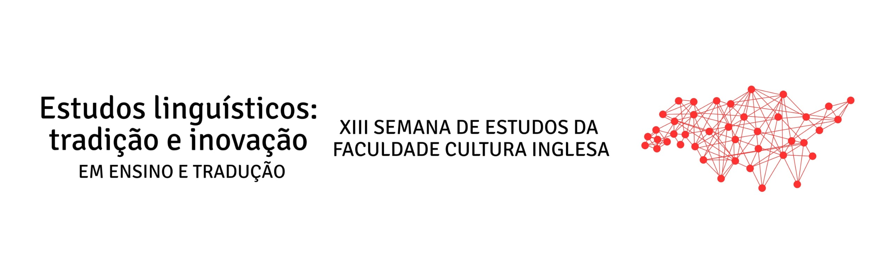

Submissão de resumos para pôsteres e comunicações orais aberta a estudantes e pesquisadores.
Formulário de Inscrição de TrabalhosConfira a grade completa e atualizada da XIII Semana de Estudos com acesso direto às salas virtuais do Google Meet.
08:00
Abertura / Boas-vindas
Auditório FCI
08:00 – 10:00
Atividade Extensionista
MultiTecLin, DEALI, Cliffhanger e GET
10:00 – 12:00
"Would I rather teach English with a robot?"
Lucia Rodrigues
Presidente do BRAZ-TESOL
19:00
20:00
"AIDE: Artificial Intelligence for Development in Education"
Vinícius da Silva Tavares — b.side solutions
Acessar sala Google Meet08:00 – 09:40
Apresentação de Trabalhos
Sala A — Tradução e Linguagem
Sala 1 — Educação e Linguagem
10:00 – 11:00
Translators 101: "Além das palavras: fluência cultural, ética e mercado na Era da IA"
William Cassemiro — Plataforma Translators101
Acessar sala Google MeetLaboratório de escuta de imagens (ação educativa)
Elidayana Alexandrino — Plataforma Projeto Afro
Auditório FCI
11:00 – 12:00
"Aviation English: The English That Allows Us to Fly"
Edflar Mendes — ICAOGo Language Institute
"A extensão universitária no acolhimento a migrantes e refugiados"
Mariana Eunice Alves de Almeida — Projeto Nossa Casa UFABC
19:00
"Narrative-based Learning: How Storytelling Shapes Meaning, Language and Learning"
Danielle Andrade — Cia. de Teatro Bilíngue
Acessar sala Google Meet20:00
"Beyond the Diploma: Personal Branding for the Modern Language Professional"
Carlos Eduardo — English Mastery
Acessar sala Google Meet"Ser professor de inglês hoje: formação, redes sociais e novos caminhos profissionais"
Carla D'Elia — Save Me Teacher / Expresse Idiomas
Acessar sala Google Meet"O mercado da tradução além da tradução"
Bruna Contti — Women in Localization
Acessar sala Google Meet08:00 – 10:00
Evento de literatura: Troca de livros & Sarau de contos e poesias
Traga seus livros usados para troca! Microfone aberto/sarau com leituras de até 10 minutos (poemas, contos ou trechos de traduções em inglês e português).
10:00
Teatro: "A Citizens' Assembly"
Cia. Arthur-Arnaldo (Soledad Yunge e Tuna Serzedello)
Peça interativa britânica de Andy Smith em colaboração com Lynsey O'Sullivan: o próprio público debate a emergência climática territorial e elabora uma carta-manifesto coletiva.
11:00
Evento Musical
Auditório FCI
19:00
"Beyond Words: Intercultural Competence through Mirrors, Windows and Sliding Doors"
Stephan Hughes e Jane Godwin Coury — Faculdade Phorte
Acessar sala Google Meet20:00
"Entre palavras e Culturas: os desafios e as alegrias do tradutor como mediador cultural"
Abigail Viana dos Santos — University of Sheffield
Acessar sala Google Meet08:00 – 09:00
"Panorama Geral da Indústria de Tradução e Localização"
Luana Lowndes — Women in Localization
Acessar sala Google Meet09:00 – 11:40
Apresentação de Trabalhos
Comunidade FCI — Sala Principal
08:30 – 09:00
"Corpus Linguistics and Inquiry-based Learning"
Rebeca Carneiro dos Anjos
Acessar sala Google Meet09:00 – 10:00
"Beyond Fluency: What Aviation English Can Teach Us About Effective Communication"
Thiago Silva — Especialista em Inglês Aeronáutico
Acessar sala Google Meet11:00 – 12:00
"ABRATES e a regulamentação da profissão tradutor"
Jorge Davidson — Presidente da ABRATES
Acessar sala Google Meet12:00
Encerramento do Evento
XIII Semana de Estudos da Faculdade Cultura Inglesa
As fotos da edição serão disponibilizadas aqui após o evento.
Coordenação Geral
Prof.ª Cassia VenezuelaPlanejamento em curso para a próxima edição da Semana de Estudos da Faculdade Cultura Inglesa.